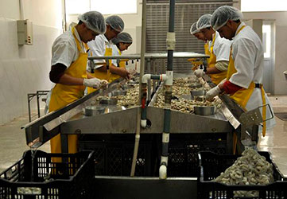

<div class="container-fluid mx-auto">
    <article>
        <section>
            <h2 class="text-center mb-5">History</h2>
            <div class="clearfix mb-5">
                

                <p>In August 1989 the dream of opening this typically "Esmeraldas" restaurant was born, a restaurant that offers a choice of seafood with a unique flavor. Since its opening, customers have been delighted with the service, flavor and variety.</p> 
                
                <p>The Palms opened its first store located on Japan Street and United Nations Avenue, behind the CCI, with a capacity for 70 people and only 7 employees. This place sought to meet consumer expectations with a new sea food option, but with the unmistakable "Esmeraldas" flavor.</p>
                
                <p class="col-lg-7 col-md-12 col-sm-12 col-xs-12">Today, 25 years later, quality and growth have led The Palms to be one of the most recognized and consolidated restaurant chains in Ecuador, with a frank international projection.</p>

                <p>From then on the business grew based on senior management work, today more than 25 years later, The Palms has more than 11 stores, under zealous standards and maintaining excellent service, the same quality and its unique and unmistakable flavor.</p>

                <p>One of the most important aspects in the growth of The Palms was the construction of its new offices and food processing plant, in August 2006, based on the requirements and new needs of the chain's strategic growth, with the sole objective of to achieve total customer satisfaction, this plant takes all the processes of raw materials, quality, processing and distribution to all the premises, ensuring a product of optimum quality, giving faith and making our phrase "as if it were by the sea" a reality.</p>
            </div>
        </section>
        <section>
            <h2 class="text-center mb-5">Process</h2>
            <div class="clearfix">
                

                <p>Our food plant receives different raw materials, which go through a rigorous selection control, leaving aside food that does not meet the quality standards implemented by the rules and procedures established by the company.</p>

                <p>The raw materials already selected are processed respecting all the hygienic norms and the norms established in the different process manuals for each product, thus obtaining inputs of the highest quality and safety in their different phases of preparation, packaging, storage and distribution.</p>
                
                <p>The different inputs already selected are stored in special containers with the highest technology, in cold rooms designed to keep them intact at low temperatures and thus ensure their nutritional content, freshness, presentation and quality.</p>
                
                <p>This process of automation and quality control allows us to always offer customers quality dishes from their ingredients to their preparation.</p>
                
                <p>The workers of the plant and premises receive permanent training for their good development in the different work areas, this being one of the fundamental values ​​of the chain to obtain continuous improvement in customer service.</p> 
            </div>
        </section>
    </article>
</div>